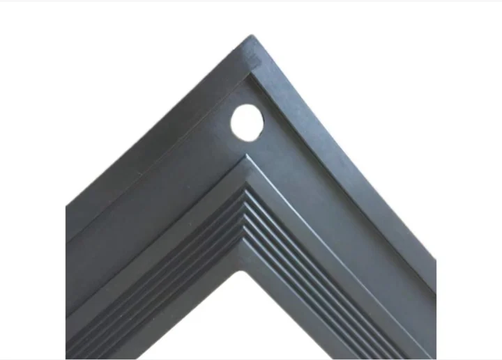
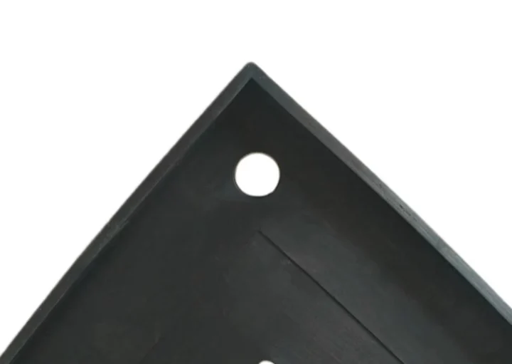

Alkalmazás
Termék ionmembrános elektrolizálókhoz klór-alkáli üzemben; az anyag és méret rajz, minta, közeg, hőmérséklet, nyomás és beépítési hely alapján igazolható.

Ipari gumi és fluoroműanyag tömítések, Elektrolizáló cellák és tömítési termékek.



Elektrolizáló cellák és tömítési termékek
| Termékkód | Rajz / projektkód szerint |
|---|---|
| Alkalmazás | Termék ionmembrános elektrolizálókhoz klór-alkáli üzemben; az anyag és méret rajz, minta, közeg, hőmérséklet, nyomás és beépítési hely alapján igazolható. |
| Kompatibilis elektrolizálók | DD350, UHDE, INEOS, Asahi Kasei, BlueStar, Chlorine Engineers; rajz és üzemi feltételek szerint igazolva |
| Anyag | EPDM / FKM / NBR / PTFE / PFA / FEP / PVDF; közeg és üzemi feltételek szerint kiválasztva |
| Keménység | 60-75 Shore A gumialkatrészekhez, ahol alkalmazható; rajz és keverék szerint igazolva |
| Üzemi hőmérséklet | Gumialkatrészeknél jellemzően -40 C és +120 C között; a fluoroplasztikus részek anyagválasztástól függenek |
| Kémiai közeg | Sóoldat, nátronlúg, klóroldal és korrozív vegyi közegek |
| Méretek | Rajz, minta vagy korszerűsítés igény szerint |
| Gyártási kör | Új elektrolizáló cellák, karbantartási tömítőelemek és membránrés korszerűsítés projektek |
| Minőségi dokumentumok | Ellenőrzési jegyzőkönyvek a rendelési rajz és minőségi megállapodás szerint |
Termék ionmembrános elektrolizálókhoz klór-alkáli üzemben; az anyag és méret rajz, minta, közeg, hőmérséklet, nyomás és beépítési hely alapján igazolható.
Termék ionmembrános elektrolizálókhoz klór-alkáli üzemben; az anyag és méret rajz, minta, közeg, hőmérséklet, nyomás és beépítési hely alapján igazolható.
Termék ionmembrános elektrolizálókhoz klór-alkáli üzemben; az anyag és méret rajz, minta, közeg, hőmérséklet, nyomás és beépítési hely alapján igazolható.
Termék ionmembrános elektrolizálókhoz klór-alkáli üzemben; az anyag és méret rajz, minta, közeg, hőmérséklet, nyomás és beépítési hely alapján igazolható.
Termék ionmembrános elektrolizálókhoz klór-alkáli üzemben; az anyag és méret rajz, minta, közeg, hőmérséklet, nyomás és beépítési hely alapján igazolható.
Termék ionmembrános elektrolizálókhoz klór-alkáli üzemben; az anyag és méret rajz, minta, közeg, hőmérséklet, nyomás és beépítési hely alapján igazolható.
Kiemelt termékek
Elektrolizáló cellák és tömítési termékek
Elektrolizáló cellák és tömítési termékek
Elektrolizáló cellák és tömítési termékek
Elektrolizáló cellák és tömítési termékek
Metatecno